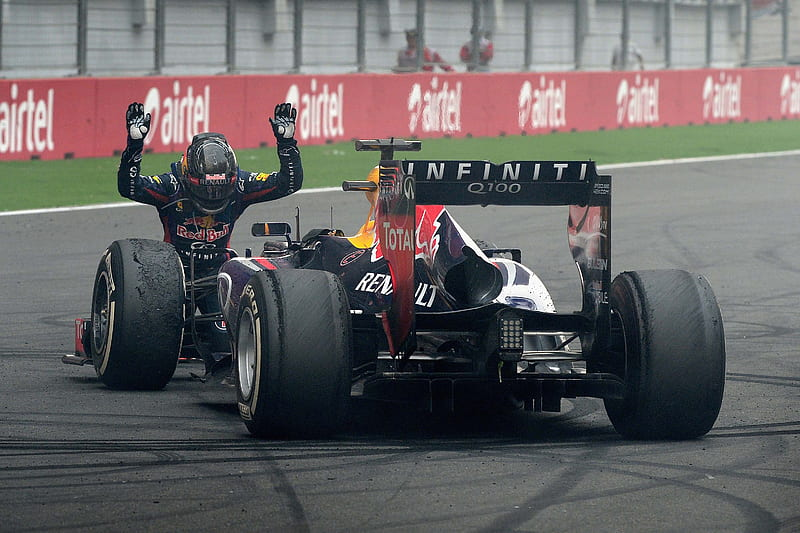

RED BULL RACING

Founded by Dietrich Mateschitz | Drivers: Max Verstappen, Yuki Tsunoda
Red Bull Racing (officially Oracle Red Bull Racing) is a top-tier Formula 1 team, competing under an Austrian license but based in the UK, known for dynamic performance, multiple championships, and star drivers like Max Verstappen.

Early Years & Foundations (2005-2008)
The team was formed from the ashes of the Jaguar Racing F1 team, purchased in 2004. First race: 2005 Australian GP.
The Vettel Era & Dominance (2009-2013)
From 2010 to 2013, Red Bull Racing won four consecutive Drivers' and Constructors' World Championships with Vettel.
Transition & New Era (2014-Present)
Max Verstappen joined the team in 2016, becoming their youngest-ever race winner, leading to a new era of dominance.